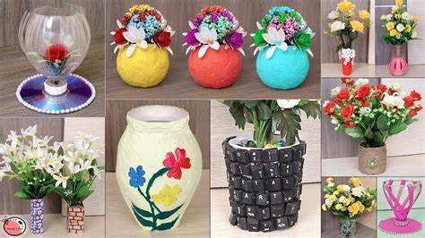
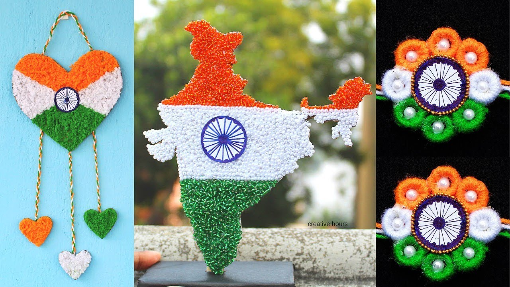
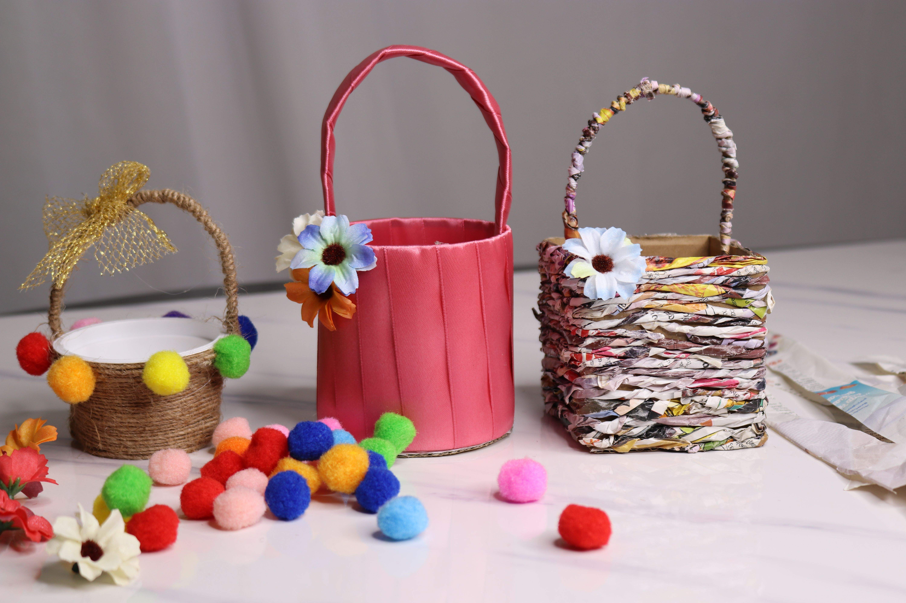
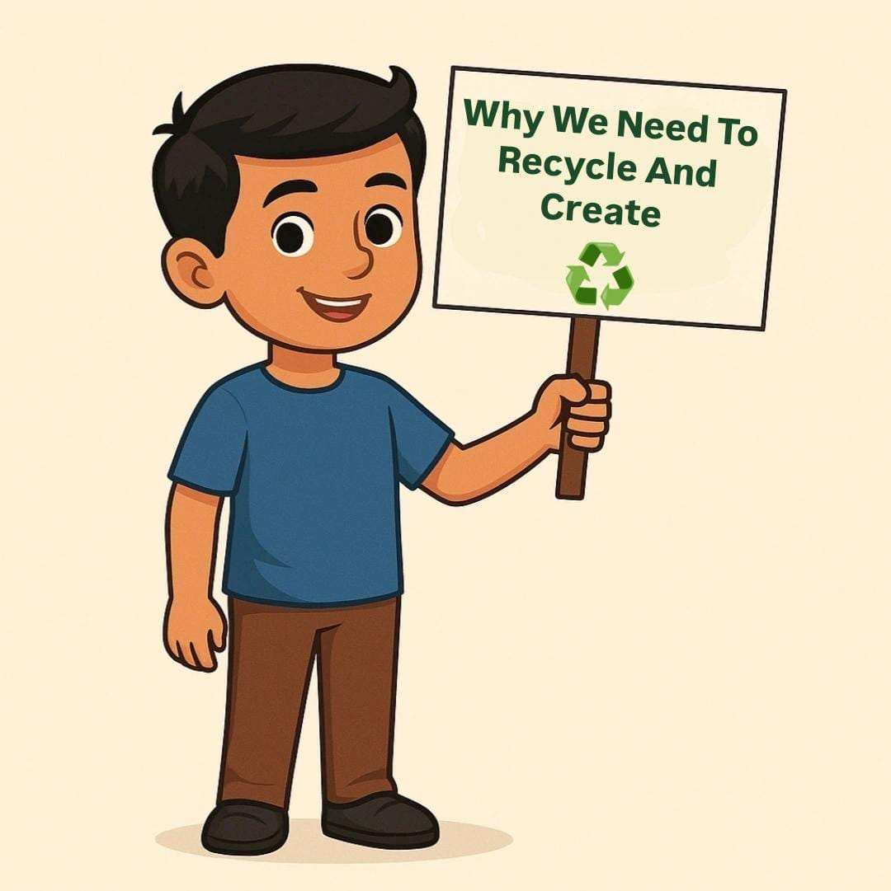
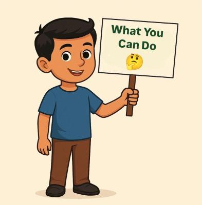
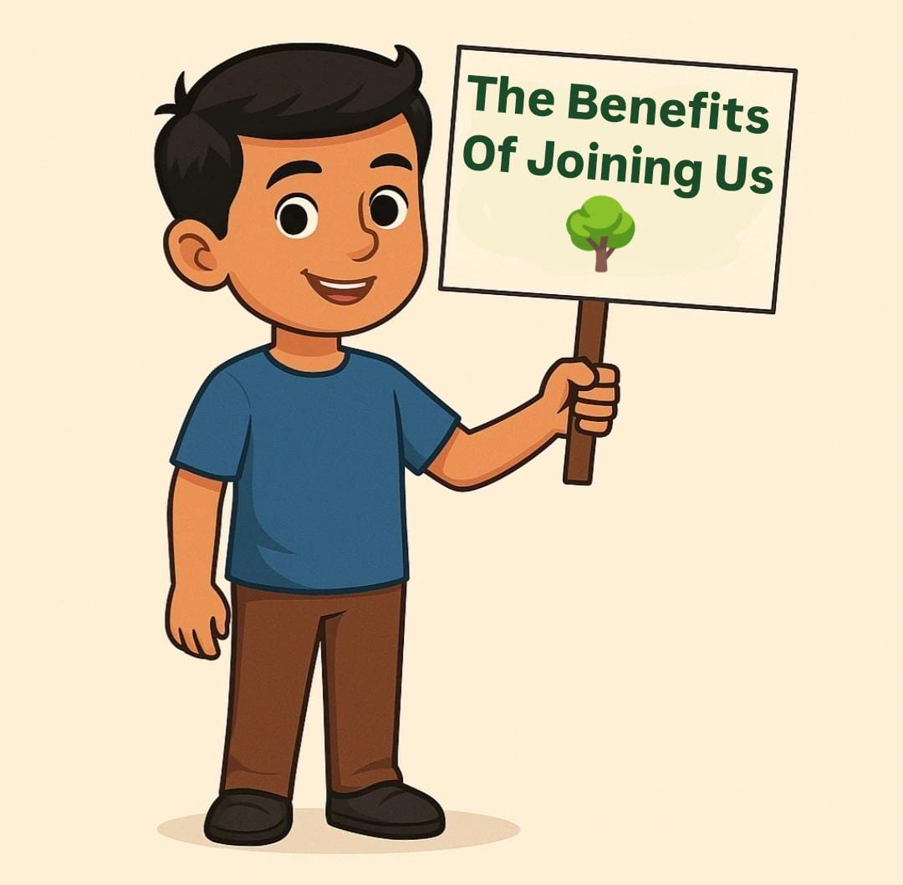
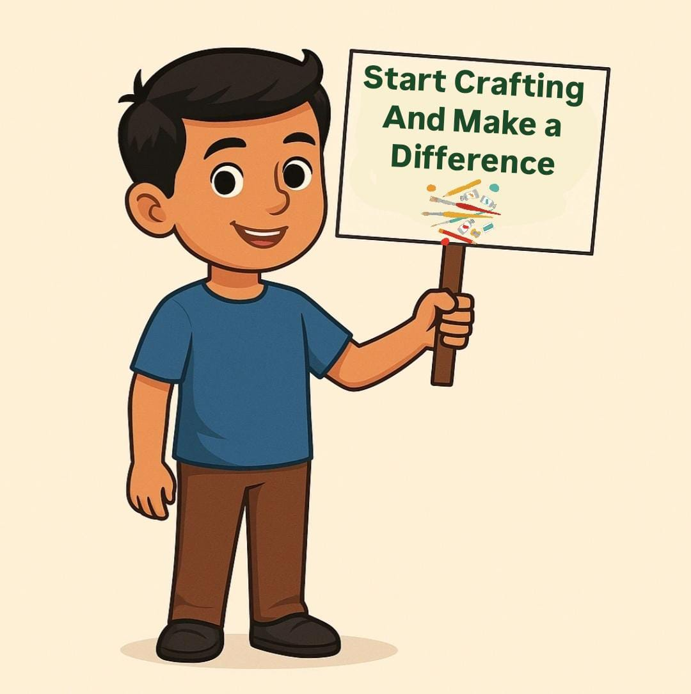

- Recycling reduces waste and transforms old materials into new, valuable resources.
- By reusing, we lower the demand for raw materials, helping conserve nature.
- Waste creates opportunities for innovation, turning trash into treasures.
- Recycling reduces energy consumption, curbing harmful carbon emissions.
- Every recycled item is a step towards a cleaner, greener planet for future generations.
Maharashtra Shasan | Waste to Best
Let's turn Waste into Wonderful Creations!
Join us in promoting sustainable living, innovation, and creativity. Your small steps towards recycling can build a greener tomorrow.



Why We Need To Recycle and Create

What You Can Do
- Start by sorting waste correctly to ensure everything finds its rightful place.
- Choose reusable products over disposable ones to reduce overall waste.
- Join local recycling programs and contribute to your community's sustainable efforts.
- Get creative and turn your waste into artistic or practical items at home.
- Spread awareness about the importance of recycling and inspire others to act.

The Benefits of Joining Us
- Together, we can make a measurable impact on environmental conservation.
- You'll become part of a community that shares your values and commitment to the planet.
- Your involvement helps drive innovation and creative solutions for sustainability.
- Joining us empowers you to contribute to a better future for the planet and its inhabitants.
- By recycling and creating, you not only help the environment, but also enrich your own life with purpose.

Start Crafting and Make a Difference
- Crafting with recycled materials turns waste into functional and beautiful items.
- Every creation you make reduces landfill waste and promotes a circular economy.
- Crafting is a great way to express creativity while making a positive environmental impact.
- By making recycled crafts, you inspire others to think creatively about waste.
- Start today, and see how your craft projects can change both your world and the planet.
